Zadatak:- Crtanje Bezierovih krivulja u vektorskim programima u zadanom koordinatnom sustavu - Definiranje sivog tona za ispunu i obrub objekata; debljina linije- Slojevi (Objects)- Automatsko crtanje objekata između zadanih objekta- Pretvaranje teksta u objekte i izrezivanje maski
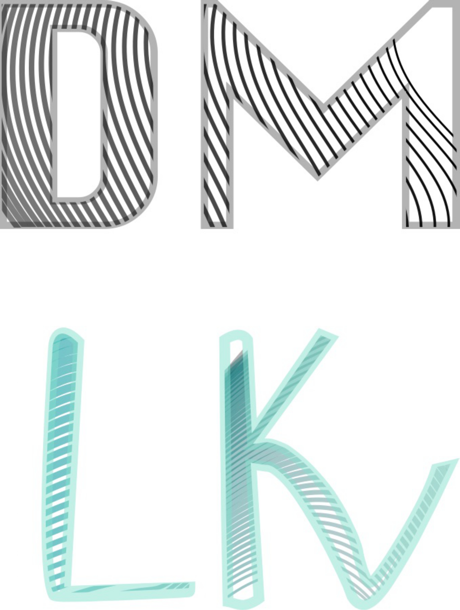Zadatak: - uvođenje slika u dokument - definiranje swatch boja u RGB, CMYK, HSL sustavima boja - transparencija (Opacity) - crtanje zatvorenih objekata, dupliciranje i transformacije (rotacija, zrcaljenje...) - rad sa slojevima (Layers); grupiranje objekata - apliciranje swatch boja na objekte
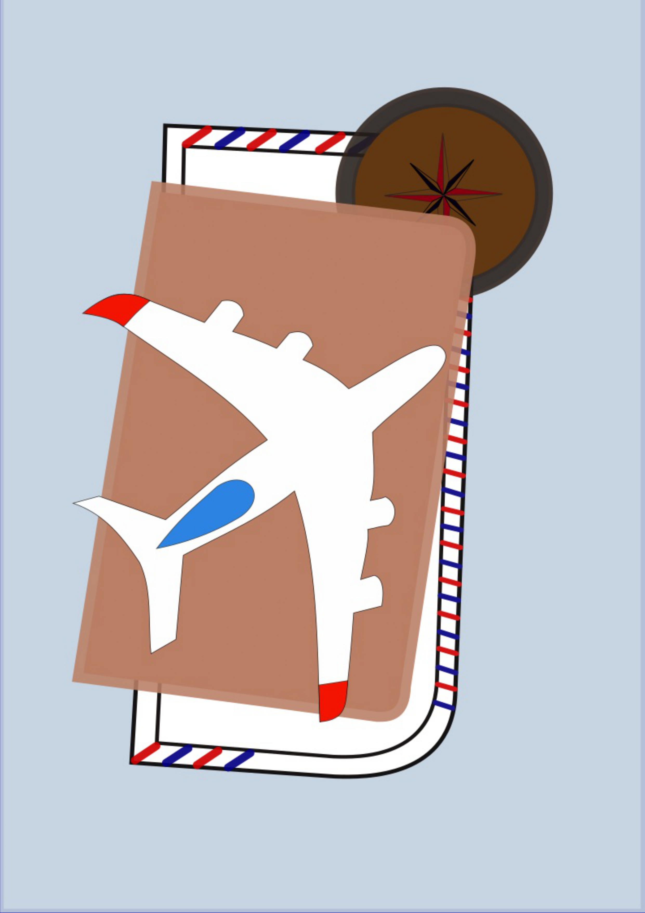 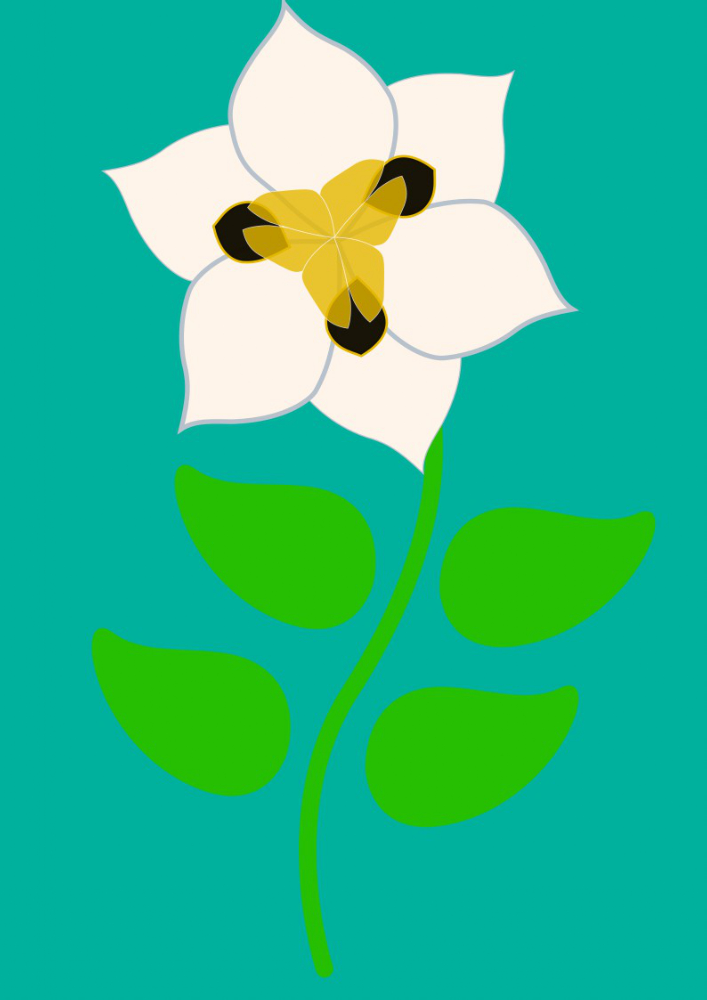Zadatak: - složeni objekti koji se sastoje od više zatvorenih staza (krivulja) - dodavanje, oduzimanje staza postojećim objektima - linearni i radijalni gradijent - "mesh" gradijent
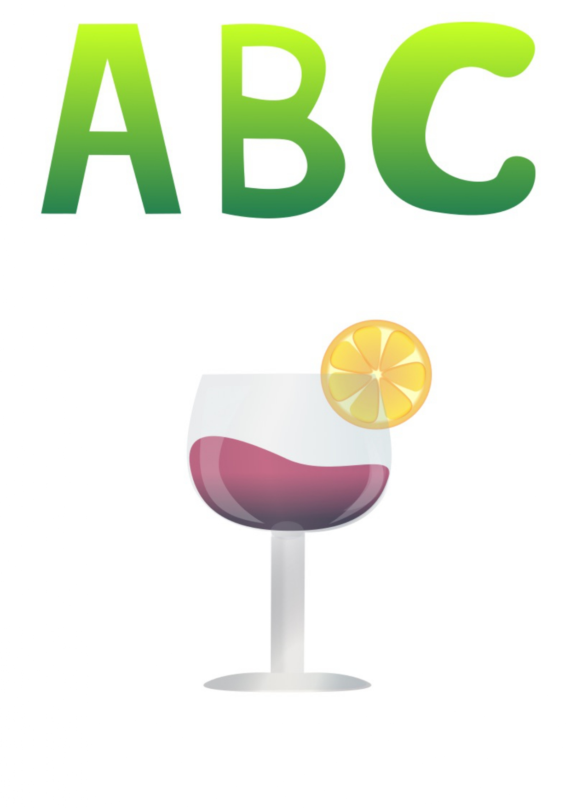 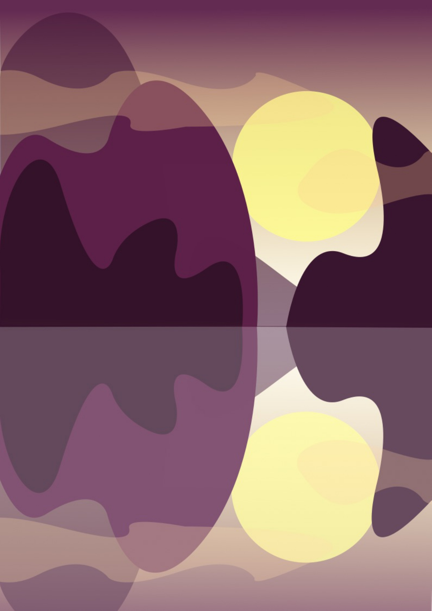Kreirati vlastiti font sa nekoliko slovnih znakova kojeg ćete upotrijebiti u drugom dijelu zadatka. 2. Kreirati jednostranični dokument U dokumentu pomoću alata za crtanje Bezierovih krivulja ilustrirati odabranu temu iz flore i/ili faune podmorja tako da se upotrijebe svi elementi zadani u tablici dolje (odabir motiva je slobodan i svi elementi se kombiniraju proizvoljno, a moguće je koristiti i sliku predložak)
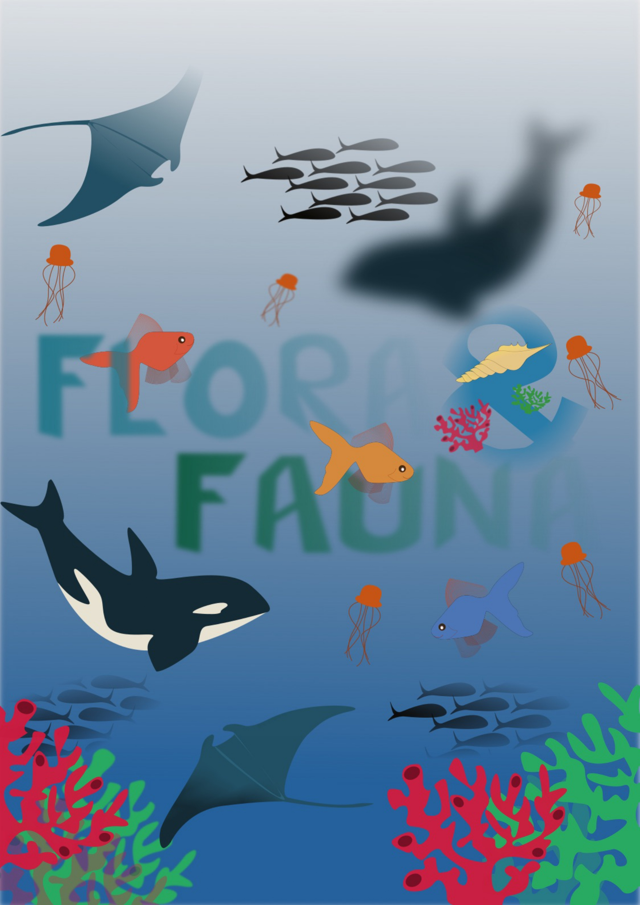Teme: - tehnike digitalnog retuširanja fotografija za postizanje realističnog efekta - selekcije (Lasso Tool) - uklanjanje nedostataka na slici: o zamućivanjem(Dust&Scratches,Median) o kloniranjem (Clone Stamp, Heal) o kopiranjemselekcijeulayere - lokalne i globalne korekcije boja (Burn/Dodge brush, Levels, Brightness/Contrast)
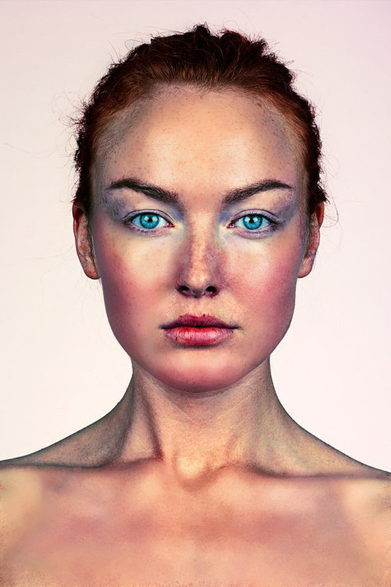 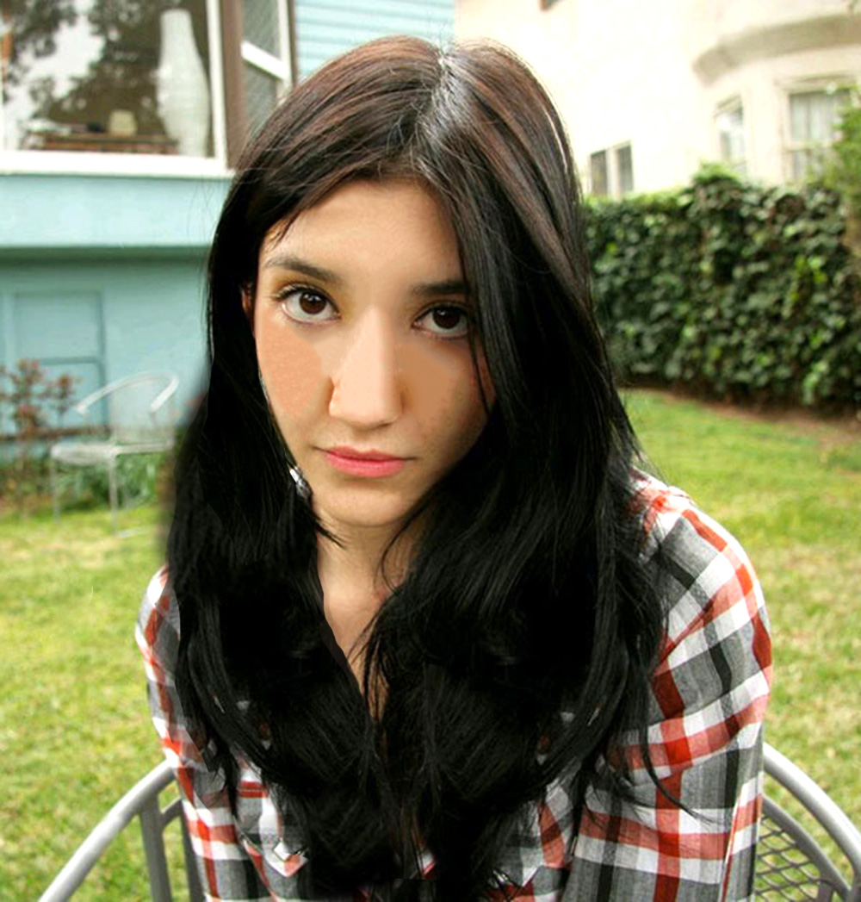Teme: - tehnike digitalnog koloriranja crno bijelih fotografija - selekcije – Magnetic Lasso Tool - selekcije – Quick Mask Mode - spremanje selekcija za kasniju upotrebu - Adjustment layer – metoda kolorizacije bez uništavanja boja na originalnoj slici - Layer mask – maksa aplicirana na layer koja skriva ili otkriva efekte na layeru - Zadatak: - Uzeti vlastitu fotografiju (na kojoj ste vi), pretvoriti ju u crno bijelu: – Image – Adjustments – Desaturate (slika je i dalje RGB ali bez boja) ili – Image – Mode – Graycale (slika gubi RGB kanale, treba ju ponovno prebaciti u RGB) - kolorirati ju sa najmanje tri boje (ili više po potrebi). - napraviti pet primjera iste slike sa različitim postavkama kolorizacije (ne mora nužno biti realistično)


* - tehnike selektiranja različitih tipova elemenata slike - Polygonal Lasso za jednostavne selekcije - Magnetic Lasso Tool, Quick Mask Mode – selekcije elemenata sa oštrim rubovima - selekcije uz pomoć kanala – za selektiranje zaamućenih, neravnih i rubova sa puno detalja - korekcije boja – Color Balance, Levels - izrada realistične sjene ZADATAK: dodati još pet elemenata po želji iz drugih izvora slika, tako da se uklope u atmosferu prve slike. Korigirati boje za usklađenje sa originalnom scenom ili stvoriti drugačije efekte (noć, oblačno, kiša...)
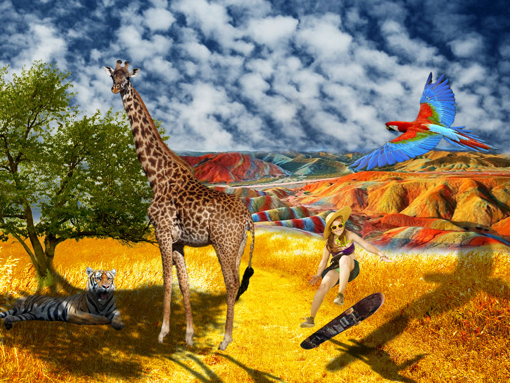 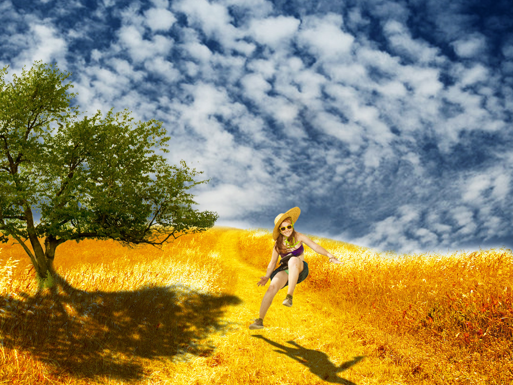Digitalni multimedij 1 – KOLOKVIJ projektni zadatak – piksel grafika Kreirati sliku u Adobe Photoshopu ili GIMPu kao kompoziciju više fotografija koristeći tehnike retuširanja, fotomontaže i koloriranja.
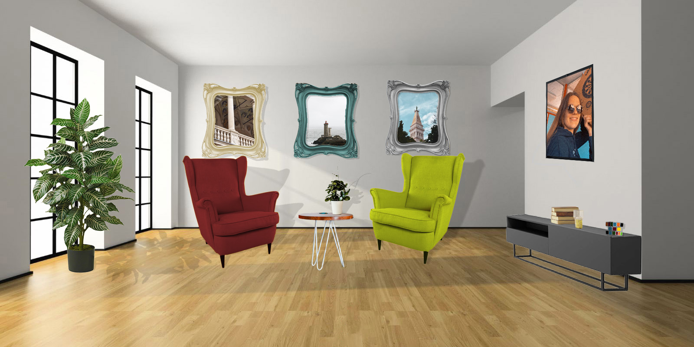TEMA vježbe: rezanje i spajanje video isječaka iz više izvora video efekti brisanje i dodavanje zvuka-dodavanje i obrada teksta ZADATAK: Izrežite clip1 i clip2 na drugačiji način nego što je opisano u uputama, dodajte im barem tri nova efekta te jedan statični i jedan pomični tekst (ubacite svoje ime i prezime). Možete dodati i drugačiji zvuk. Izvezite video u mp4 formatu.